湖南省2022年普通高中学业水平选择性考试
化 学
注意事项：
1.答卷前，考生务必将自己的姓名、准考证号填写在本试卷和答题卡上。
2.回答选择题时，选出每小题答案后，用铅笔把答题卡上对应题目的答案标号涂黑。如需改动，用橡皮擦干净后，再选涂其他答案标号。回答非选择题时，将答案写在答题卡上，写在本试卷上无效。
3.考试结束后，将本试卷和答题卡一并交回。
可能用到的相对原子质量：H 1 C 12 N 14 O 16 S 32 Cl 35.5 K 39 Fe 56 Se 79 Ba 137
相关题目：第 1 题 · 第 2 题 · 第 3 题 · 第 4 题 · 第 5 题 · 第 6 题 · 第 7 题 · 第 8 题 · 第 9 题 · 第 10 题 · 第 11 题 · 第 12 题 · 第 13 题 · 第 14 题 · 第 15 题 · 第 16 题 · 第 17 题 · 第 18 题 · 第 19 题
一、选择题：本题共10小题，每小题3分，共30分。在每小题给出的四个选项中，只有一项是符合题目要求的。
相关题目：第 1 题 · 第 2 题 · 第 3 题 · 第 4 题 · 第 5 题 · 第 6 题 · 第 7 题 · 第 8 题 · 第 9 题 · 第 10 题
返回原卷说明与相对原子质量 返回单项选择题说明
题目与已知条件
化学促进了科技进步和社会发展，下列叙述中没有涉及化学变化的是（ ）
A. 《神农本草经》中记载的“石胆能化铁为铜”
B. 利用“侯氏联合制碱法”制备纯碱
C. 科学家成功将CO₂转化为淀粉或葡萄糖
D. 北京冬奥会场馆使用CO₂跨临界直冷制冰
查看原题图／原始配图
读题与思路
CO₂跨临界循环制冰靠相态/物理过程吸热，没有生成新物质，D成立；铁置换铜、联合制碱、把CO₂转糖都改变物质组成。
分步解析
- 石胆中的Cu²⁺被Fe还原为Cu，联合制碱及CO₂转为糖类都改变物质组成。
- CO₂跨临界制冷依靠压缩、放热与膨胀吸热等物理过程，不生成新物质。
检查与易错点
制冷循环可以经过临界状态，并不因此成为化学反应。
本题来源：paper2022 · doc-paper
返回原卷说明与相对原子质量 返回单项选择题说明
题目与已知条件
下列说法错误的是（ ）
A. 氢键，离子键和共价键都属于化学键
B. 化学家门捷列夫编制了第一张元素周期表
C. 药剂师和营养师必须具备化学相关专业知识
D. 石灰石是制造玻璃和水泥的主要原料之一
查看原题图／原始配图
所用高中知识
氢键和化学键的区别；元素周期表及石灰石用途。
读题与思路
氢键属于较强的分子间或分子内非共价作用，高中分类不把它与离子键/共价键并列为化学键，所以A错误。其余历史、专业知识和工业原料叙述成立。
分步解析
- A把氢键与离子键、共价键一并列为通常意义的化学键，不合本题高中分类。
- 门捷列夫对第一张元素周期表的编制作出奠基性贡献；药剂师、营养师需相关化学知识；石灰石是玻璃、水泥的重要原料，B、C、D均成立。
检查与易错点
氢键会影响沸点、溶解度及结构，但不能因此等同普通共价键。
本题来源：paper2022 · doc-paper
返回原卷说明与相对原子质量 返回单项选择题说明
题目与已知条件
聚乳酸是一种新型的生物可降解高分子材料，其合成路线如下：
n HO−CH(CH₃)−COOH H[−O−CH(CH₃)−CO−]ₙOH + m H₂O
乳酸 聚乳酸
下列说法错误的是（ ）
A. m=n−1
B. 聚乳酸分子中含有两种官能团
C. 1 mol乳酸与足量的Na反应生成1 mol H₂
D. 两分子乳酸反应能够生成含六元环的分子
查看原题图／原始配图
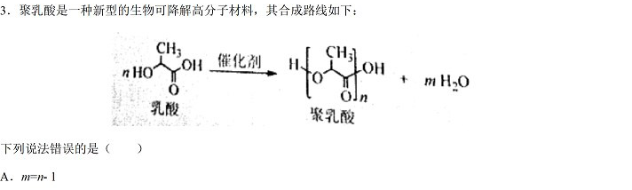
原始配图 1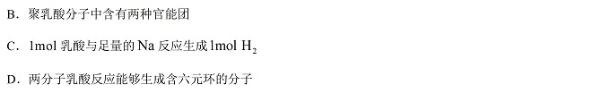
原始配图 2读题与思路
图中明确保留链两端H/OH，n乳酸线性缩聚脱n−1水。链中有酯基、端羟基和端羧基三类含氧官能团，B说两种错误。每乳酸2个可被Na取代的O—H，1mol放1molH₂；两分子双酯化可成六元环。
分步解析
- n个乳酸形成一条线性链时建立n−1个酯键，脱去n−1个H₂O，A成立。
- 除链内酯基，聚乳酸端部还保留羟基与羧基，共3种官能团，B说两种错误。
- 一分子乳酸有羟基H和羧基H，均可与足量Na反应，每mol乳酸得1 mol H₂。两分子乳酸可用两个酯键成六元环，C、D成立。
检查与易错点
讨论端基时n不可默认无穷大；题图明确画了端基，应计入官能团种类。
本题来源：paper2022 · doc-paper
返回原卷说明与相对原子质量 返回单项选择题说明
题目与已知条件
化学实验操作是进行科学实验的基础。下列操作符合规范的是
| 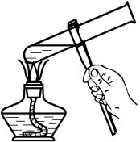
| 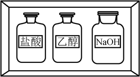
|
|
A.碱式滴定管排气泡 | B.溶液加热 | C.试剂存放 | D.溶液滴加 |
A. A B. B C. C D. D
查看原题图／原始配图
原始配图 1原始配图 2原始配图 3原始配图 4
所用高中知识
碱式滴定管排气、试管夹持、药品分类、胶头滴管。
读题与思路
A将碱式滴定管尖嘴上翘并挤压玻璃珠附近橡胶管，可排气泡。加热试管应控制装液量且倾斜、瓶签应向外可辨、胶头滴管不伸入试管内或贴壁，故其余图操作不合规范。
分步解析
- 碱式滴定管排气应将尖嘴向上弯起、轻捏玻璃珠使液流推出气泡，A图合规范。
- 加热试管应用试管夹夹在距管口约1/3处，图B的操作不合要求。
- 盐酸、NaOH及乙醇等应按酸、碱和有机试剂的相容性分类存放，图C所示混放不合理；胶头滴管应悬于容器上方滴加，不能把尖嘴插入液体，D错误。
检查与易错点
药瓶标签在转载图较小，判断依据是酸碱分类与相容性，不凭瓶子的颜色作推断。
本题来源：paper2022 · doc-paper
返回原卷说明与相对原子质量 返回单项选择题说明
题目与已知条件
科学家合成了一种新的共价化合物（结构如图所示），X、Y、Z、W为原子序数依次增大的短周期元素，W的原子序数等于X与Y的原子序数之和。下列说法错误的是
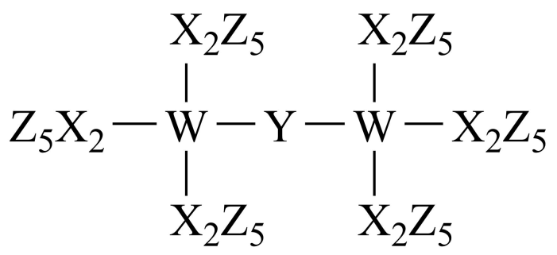
A．原子半径：X>Y>Z
B．非金属性：Y>X>W
C．Z的单质具有较强的还原性
D．原子序数为82的元素与W位于同一主族
查看原题图／原始配图
原始配图 1
所用高中知识
键价、短周期原子序数、周期律、卤素氧化性。
读题与思路
按原子序与四键/二键结构得到X=C、Y=O、Z=F、W=Si，原子序6<8<9<14且14=6+8；侧基实为C₂F₅。C/O/F半径依次减，O>C>Si非金属性次序对，Pb与Si同族；F₂强氧化而非强还原，选C。
分步解析
- 按结构：X=C、Y=O、Z=F、W=Si。原子序号6、8、9、14依次增大，且14=6+8，全部符合。
- 同一周期原子半径C>O>F，非金属性O>C>Si，A、B成立。
- F₂为强氧化剂而非强还原剂，C错误。82号Pb与Si均为第ⅣA族，D成立。
检查与易错点
Y为O使Si—O—Si桥键成立；不能单凭“原子序数和”而不校验全部键。
本题来源：paper2022 · doc-paper
返回原卷说明与相对原子质量 返回单项选择题说明
题目与已知条件
甲基丙烯酸甲酯是合成有机玻璃的单体。
旧法合成的反应：
(CH₃)₂C=O+HCN → (CH₃)₂C(OH)CN
(CH₃)₂C(OH)CN+CH₃OH+H₂SO₄ → CH₂=C(CH₃)COOCH₃+NH₄HSO₄
新法合成的反应：
CH₃C≡CH+CO+CH₃OH → CH₂=C(CH₃)COOCH₃（Pd催化）
下列说法错误的是（阿伏加德罗常数的值为NA）
A．HCN的电子式为：
![]()
B．新法没有副产物产生，原子利用率高
C．1 L 0.05 mol·L⁻¹的NH₄HSO₄溶液中NH₄⁺的微粒数小于0.05NA
D．Pd的作用是降低反应的活化能，使活化分子数目增多，百分数不变
查看原题图／原始配图
原始配图 1 所用高中知识
电子式、原子利用率、铵盐水解、催化剂降低活化能。
读题与思路
新法CH₃C≡CH+CO+CH₃OH原子全部进入甲基丙烯酸甲酯，无副产物；NH₄⁺水解使数目略少于投料。Pd降低活化能后，同温度达到新能垒的分子数和百分数都增加，D所说百分数不变错误。HCN为H—C≡N、N有一孤对。
分步解析
- HCN结构为H—C≡N，N有一对孤电子，电子式与A一致。
- 新法将丙炔、CO、甲醇全部并入酯分子，没有副产物，原子利用率高，B成立。
- NH₄HSO₄溶液中NH₄⁺有少量水解，1 L 0.05 mol·L⁻¹溶液的NH₄⁺数小于0.05Nₐ，C成立。
- Pd降低活化能，活化分子的数目与百分数均增大，D称百分数不变错误。
检查与易错点
活化分子百分数不变适用于只提高浓度等特定比较，不适用于降低活化能。
本题来源：paper2022 · doc-paper
返回原卷说明与相对原子质量 返回单项选择题说明
题目与已知条件
铝电解厂烟气净化的一种简单流程如下：
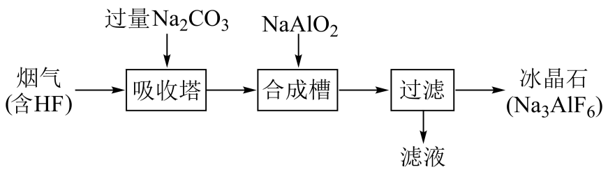
下列说法错误的是
A．不宜用陶瓷作吸收塔内衬材料
B．采用溶液喷淋法可提高吸收塔内烟气吸收效率
C．合成槽中产物主要有Na₃AlF₆和CO₂
D．滤液可回收进入吸收塔循环利用
查看原题图／原始配图
原始配图 1
所用高中知识
HF腐蚀玻璃、吸收传质、氟化铝酸盐配平。
读题与思路
HF能侵蚀硅酸盐陶瓷，喷淋增大气液接触，滤液含再生Na₂CO₃可循环。吸收先得NaF和NaHCO₃，合成冰晶石伴生Na₂CO₃等，不能把主副产物写成Na₃AlF₆和CO₂，C错。
分步解析
- HF会与SiO₂反应，不能用含硅酸盐陶瓷作吸收塔内衬；喷淋扩大气液接触面积，提高吸收效率，A、B成立。
- 吸收塔中过量Na₂CO₃使HF转为NaF；合成槽主要反应可写6NaF+NaAlO₂+2H₂O→Na₃AlF₆↓+4NaOH，产物中并不主要生成CO₂，C错误。
- 滤液中的碱可回吸收塔继续吸收HF，D成立。方程Na7、Al1、F6、O4、H4均守恒。
检查与易错点
不要把吸收阶段碳酸盐遇酸释放CO₂误移到合成槽中。
本题来源：paper2022 · doc-paper
返回原卷说明与相对原子质量 返回单项选择题说明
题目与已知条件
海水电池在海洋能源领域备受关注，一种锂—海水电池构造示意图如下。下列说法错误的是
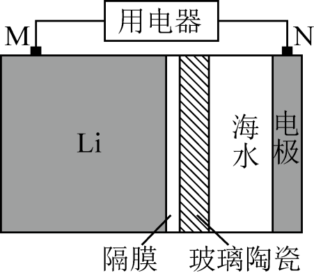
A．海水起电解质溶液作用
B．N极仅发生的电极反应：2H₂O+2e⁻=2OH⁻+H₂↑
C．玻璃陶瓷具有传导离子和防水的功能
D．该锂—海水电池属于一次电池
查看原题图／原始配图
原始配图 1
所用高中知识
原电池负极、海水电解质、析氢与吸氧还原、选择性隔膜。
读题与思路
Li作负极失电子，海水作离子导体，玻璃陶瓷阻水而导Li⁺。正极既可能还原水析氢，也可能还原溶解氧生成OH⁻，“仅发生”水还原过于绝对，因此B错；所示耗锂一次电池并无可逆充电循环。
分步解析
- Li为负极：Li→Li⁺+e⁻。海水提供离子导电，A成立；隔膜导Li⁺且阻隔水，避免Li直接与水接触，C成立。
- N正极可以发生2H₂O+2e⁻→H₂+2OH⁻，但海水溶解氧也可还原：O₂+2H₂O+4e⁻→4OH⁻。B“仅发生”排除其他途径，错误。
- 所示Li消耗型装置属于一次电池，D成立。
检查与易错点
电解质为海水不等于溶液只含H₂O和NaCl；氧还原不能遗漏。
B项的“仅”字是限制词，判断时不能忽略。
本题来源：paper2022 · doc-paper
返回原卷说明与相对原子质量 返回单项选择题说明
题目与已知条件
科学家发现某些生物酶体系可以促进H⁺和e⁻的转移（如a、b和c），能将海洋中的NO₂⁻转化为N₂进入大气层，反应过程如图所示。
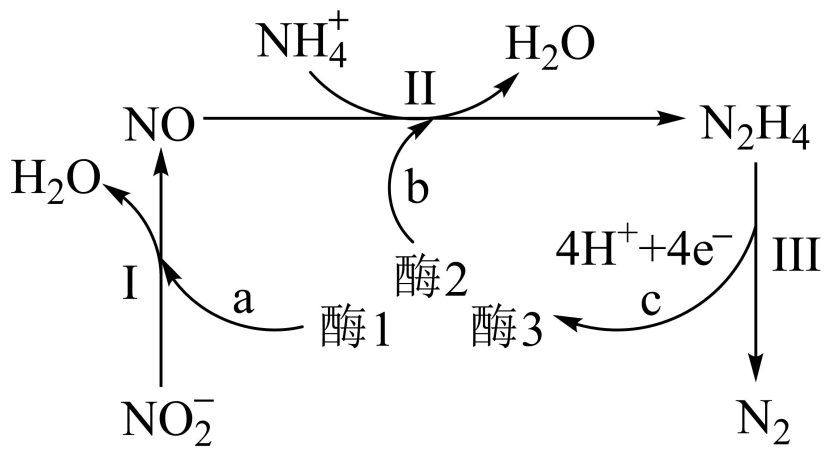
下列说法正确的是
A．过程Ⅰ中NO₂⁻发生氧化反应
B．a和b中转移的e⁻数目相等
C．过程Ⅱ中参与反应的n(NO)∶n(NH₄⁺)=1∶4
D．过程Ⅰ～Ⅲ的总反应为NO₂⁻+NH₄⁺=N₂↑+2H₂O
查看原题图／原始配图
原始配图 1
读题与思路
Ⅰ配平NO₂⁻+2H⁺+e⁻→NO+H₂O，为还原。Ⅱ按N/H/O/电荷守恒配为NO+NH₄⁺+2H⁺+3e⁻→N₂H₄+H₂O，NO:NH₄⁺=1:1且电子数不同。Ⅲ为N₂H₄→N₂+4H⁺+4e⁻。三式相加正好消掉4e和4H⁺，总式NO₂⁻+NH₄⁺→N₂+2H₂O，所以D。
分步解析
- Ⅰ：NO₂⁻+2H⁺+e⁻→NO+H₂O，N由+3降至+2，为还原而非氧化，A错误。
- Ⅱ：NO+NH₄⁺+2H⁺+3e⁻→N₂H₄+H₂O；每份NO与NH₄⁺按1∶1反应，且电子为3，不是与Ⅰ相同的1，B、C错误。
- Ⅲ：N₂H₄→N₂+4H⁺+4e⁻。三式相加，1+3=4 mol电子恰抵消，H⁺、NO、N₂H₄也抵消，得NO₂⁻+NH₄⁺→N₂+2H₂O，D正确。
检查与易错点
公开参考键有C，与图示反应计量不符。总式N2、H4、O2及净电荷0均守恒；不把该纠正说成官方改卷通知。
本题来源：paper2022 · pdf2022 · doc-paper
返回原卷说明与相对原子质量 返回单项选择题说明
题目与已知条件
室温时，用0.100 mol·L⁻¹的标准AgNO₃溶液滴定15.00 mL浓度相等的Cl⁻、Br⁻和I⁻混合溶液，通过电位滴定法获得lg c(Ag⁺)与V(AgNO₃)的关系曲线如图所示（忽略沉淀对离子的吸附作用。若溶液中离子浓度小于1.0×10⁻⁵ mol·L⁻¹时，认为该离子沉淀完全。Ksp(AgCl)=1.8×10⁻¹⁰，Ksp(AgBr)=5.4×10⁻¹³，Ksp(AgI)=8.5×10⁻¹⁷）。下列说法正确的是（ ）
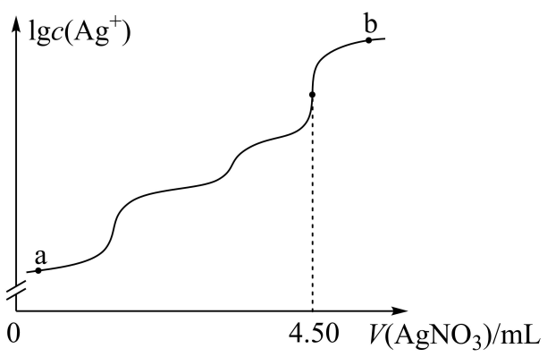
A. a点：有白色沉淀生成
B. 原溶液中I⁻的浓度为0.100 mol·L⁻¹
C. 当Br⁻沉淀完全时，已经有部分Cl⁻沉淀
D. b点：c(Cl⁻)>c(Br⁻)>c(I⁻)>c(Ag⁺)
查看原题图／原始配图
所用高中知识
溶度积、先后沉淀、沉淀完全阈值、物料计量。
读题与思路
AgI、AgBr、AgCl依Ksp由小到大沉淀。a点先析黄色AgI而非白色；4.50mL三盐总耗Ag0.450mmol，各0.150mmol/15mL=0.0100M。Br⁻刚降到10⁻⁵M时Ag⁺=5.4×10⁻⁸，已大于AgCl开始沉淀所需约10⁻⁸，因此C成立。b点Ag⁺过量，不能把它放在所有卤离子之后。
分步解析
- 三种阴离子等浓度，总终点4.50 mL×0.100 mol·L⁻¹=0.450 mmol，分别0.150 mmol；各初始浓度0.150/15.00=0.0100 mol·L⁻¹，B的0.100错误。
- Ksp(AgI)最小，a点先生成黄色AgI，A“白色”错误。
- 当c(Br⁻)=10⁻⁵ mol·L⁻¹刚沉淀完全时，c(Ag⁺)=5.4×10⁻¹³/10⁻⁵=5.4×10⁻⁸。与AgCl平衡的c(Cl⁻)=1.8×10⁻¹⁰/(5.4×10⁻⁸)=3.33×10⁻³ mol·L⁻¹，低于此时未沉淀时的Cl⁻浓度，说明已有部分AgCl沉淀，C正确。
- b在总终点之后，AgNO₃过量，Ag⁺较多，不能排在三种卤离子之后，D错误。
检查与易错点
比较沉淀开始与沉淀完全要用不同阈值；不能见Ksp不同便说三种离子必完全依次沉完、互不重叠。
本题来源：paper2022 · doc-paper
二、选择题，本题共4小题，每小题4分，共16分。在每小题给出的四个选项中，有一个或两个选项符合题目要求。全部选对的得4分，选对但不全的得2分，有选错的得0分。
相关题目：第 11 题 · 第 12 题 · 第 13 题 · 第 14 题
返回原卷说明与相对原子质量 返回不定项选择题说明
题目与已知条件
下列离子方程式正确的是（ ）
A. Cl₂通入冷的NaOH溶液：Cl₂+2OH⁻=Cl⁻+ClO⁻+H₂O
B. 用醋酸和淀粉−KI溶液检验加碘盐中的IO₃⁻：IO₃⁻+5I⁻+6H⁺=3I₂+3H₂O
C. FeSO₄溶液中加入H₂O₂产生沉淀：2Fe²⁺+H₂O₂+4H₂O=2Fe(OH)₃↓+4H⁺
D. NaHCO₃溶液与少量的Ba(OH)₂溶液混合：HCO₃⁻+Ba²⁺+OH⁻=BaCO₃↓+H₂O
查看原题图／原始配图
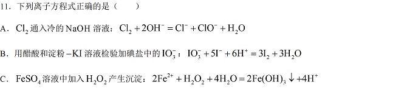
原始配图 1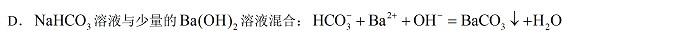
原始配图 2所用高中知识
弱电解质保留分子式、氧化还原、反应物用量。
读题与思路
A冷碱氯气歧化配成Cl⁻/ClO⁻正确；C由Fe²⁺失电子、H₂O₂得电子并水解沉Fe(OH)₃配平也正确。B中醋酸不能拆H⁺；D在NaHCO₃过量时每Ba(OH)₂有2OH⁻，应使2HCO₃⁻反应并同时生成CO₃²⁻，故AC。
分步解析
- A：Cl₂+2OH⁻→Cl⁻+ClO⁻+H₂O，冷稀碱中歧化正确。
- B用醋酸提供酸性，CH₃COOH是弱酸，应保留在反应式中，不能直接写6H⁺作为投入的强酸物种；可写IO₃⁻+5I⁻+6CH₃COOH→3I₂+3H₂O+6CH₃COO⁻。
- C：2Fe²⁺+H₂O₂+4H₂O→2Fe(OH)₃↓+4H⁺，两个Fe共失2e⁻，H₂O₂得2e⁻；原子及电荷左+4、右+4，正确。
- D中Ba(OH)₂少量、NaHCO₃过量，每Ba²⁺对应2OH⁻都能与HCO₃⁻反应。正确为2HCO₃⁻+Ba²⁺+2OH⁻→BaCO₃↓+CO₃²⁻+2H₂O，原式漏一份OH⁻反应。
检查与易错点
“方程已经电荷守恒”并不足以证明正确；还需检查弱酸拆分与过量少量关系。
本题来源：paper2022 · doc-paper
返回原卷说明与相对原子质量 返回不定项选择题说明
题目与已知条件
反应物(S)转化为产物(P或P·Z)的能量与反应进程的关系如下图所示：
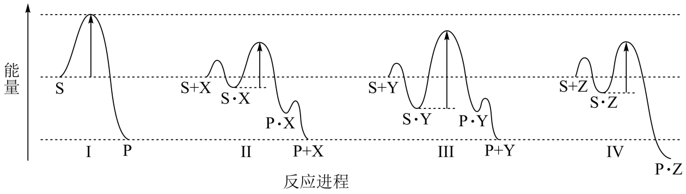
下列有关四种不同反应进程的说法正确的是（ ）
A. 进程Ⅰ是放热反应 B. 平衡时P的产率：Ⅱ>Ⅰ
C. 生成P的速率：Ⅲ>Ⅱ D. 进程Ⅳ中，Z没有催化作用
查看原题图／原始配图
所用高中知识
反应焓、平衡与催化剂、局部能垒、催化剂再生。
读题与思路
Ⅰ产物能量低于反应物，A放热成立。Ⅱ有催化剂X但不改平衡产率，B错；Ⅲ的中间体谷到主峰能垒大于Ⅱ，不能说速率更快，C错。Ⅳ的Z进入最终P·Z而没有再生，不作为催化剂，D成立。
分步解析
- Ⅰ中P能量低于S，为放热过程，A正确。
- Ⅱ的X在末端再生，起催化作用，仅改变途径，不提高同温同初态的平衡产率，B所写Ⅱ>Ⅰ不成立。
- Ⅲ中S·Y谷底较深，到下一峰的能垒比Ⅱ大；不能以峰顶的绝对高度判断更快，C的Ⅲ>Ⅱ错误。
- Ⅳ最终产物为P·Z，Z没有被再生，因此在所示过程不作催化剂，D正确。
检查与易错点
源JPG把罗马编号显示成问号；此处按PDF核对重排：A过程Ⅰ放热；B平衡P产率Ⅱ>Ⅰ；C速率Ⅲ>Ⅱ；D过程Ⅳ中Z不催化。
本题来源：paper2022 · pdf2022 · doc-paper
返回原卷说明与相对原子质量 返回不定项选择题说明
题目与已知条件
为探究FeCl₃的性质，进行了如下实验（FeCl₃和Na₂SO₃溶液浓度均为0.1 mol·L⁻¹）。
| 实验 | 操作与现象 |
|---|
| ① | 在5 mL水中滴加2滴FeCl₃溶液，呈棕黄色；煮沸，溶液变红褐色。 |
|---|
| ② | 在5 mL FeCl₃溶液中滴加2滴Na₂SO₃溶液，变红褐色；
再滴加K₃[Fe(CN)₆]溶液，产生蓝色沉淀。 |
|---|
| ③ | 在5 mL Na₂SO₃溶液中滴加2滴FeCl₃溶液，变红褐色；
将上述混合液分成两份，一份滴加K₃[Fe(CN)₆]溶液，无蓝色沉淀生成；
另一份煮沸，产生红褐色沉淀。 |
|---|
依据上述实验现象，结论不合理的是（ ）
A. 实验①说明加热促进Fe³⁺水解反应
B. 实验②说明Fe³⁺既发生了水解反应，又发生了还原反应
C. 实验③说明Fe³⁺发生了水解反应，但没有发生还原反应
D. 整个实验说明SO₃²⁻对Fe³⁺的水解反应无影响，但对还原反应有影响
查看原题图／原始配图
所用高中知识
Fe³⁺水解、还原为Fe²⁺、亚铁检验、酸碱消耗。
读题与思路
①热水解增强；②红褐色并能检出Fe²⁺支持水解及还原并行。③阴性Fe²⁺检验在高中定性模型中按水解主导解释，但不能推广成严格无任何微量还原。D说SO₃²⁻对水解无影响明确不成立：它可接受H⁺，推动Fe³⁺水解。
分步解析
- ①加热后形成红褐色分散体系，说明加热促进Fe³⁺水解，A符合。
- ②加入K₃[Fe(CN)₆]生成蓝色沉淀，证明出现Fe²⁺，即Fe³⁺发生还原；红褐色又提示水解，B符合。
- ③未检出相应蓝色沉淀，煮沸后有红褐色沉淀；在本题给定的定性检验范围，可按以水解为主解释，不能将这个阴性检验拓展为所有条件下绝无氧化还原。
- SO₃²⁻能结合H⁺形成HSO₃⁻等，消耗Fe³⁺水解释放的H⁺，改变水解平衡。因此D说“对水解无影响”与实验及酸碱原理冲突。
检查与易错点
实验结论须限定试剂量与检测条件。FeCl₃与Na₂SO₃的混合顺序改变局部酸碱环境和浓度，不能把两次实验视作完全相同。
本题来源：paper2022 · doc-paper
返回原卷说明与相对原子质量 返回不定项选择题说明
题目与已知条件
向体积均为1 L的两恒容容器中分别充入2 mol X和1 mol Y发生反应：2X(g)+Y(g) ⇌ Z(g) ΔH，其中甲为绝热过程，乙为恒温过程，两反应体系的压强随时间的变化曲线如图所示。下列说法正确的是
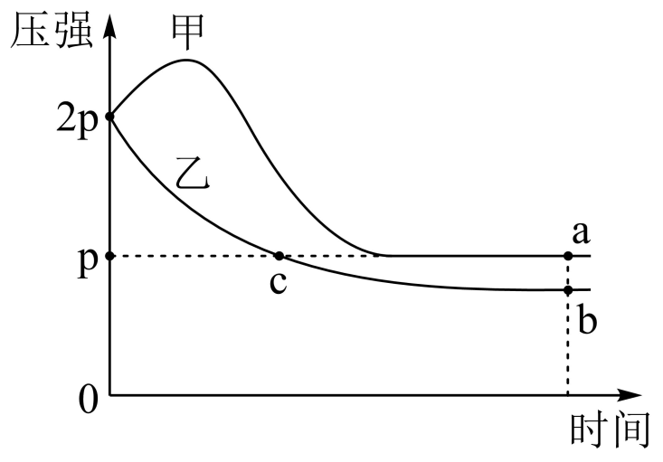
A．ΔH>0
B．气体的总物质的量：na<nc
C．a点平衡常数：K>12
D．反应速率：va正<vb正
查看原题图／原始配图
原始配图 1
所用高中知识
pV=nRT、放热反应温升、转化率与平衡常数。
读题与思路
甲气体数减少却先升压，必须由放热升温补偿，所以ΔH<0。a、c同p同V而Ta>Tc，na<nc，B成立；恒温c点压力为初始一半，nc=1.5mol，故na<1.5。令甲进度ξ，3−2ξ<1.5得ξ>0.75，K=ξ/[(2−2ξ)²(1−ξ)]>12，C成立。甲平衡更热且反应物浓度更大，正速率不小于乙b，D错误。
分步解析
- 反应2X+Y⇌Z使气体量减少，但甲初始压强反升，说明绝热放热使温度升高，ΔH<0，A错误。
- a为较热甲的平衡点，c为恒温乙在压强p的过程点。pa=pc=p且Ta>Tc，由n=pV/(RT)，na<nc，B正确。初始3 mol对应2p，c点同温压力减半，nc=1.5 mol，因此na<1.5 mol。
- 令甲平衡反应进度ξ，na=3−2ξ<1.5，故ξ>0.75；V=1 L，K=ξ/[(2−2ξ)²(1−ξ)]。ξ增大时分子增大、正分母减小，K>0.75/(0.5²×0.25)=12，C正确。
- a比b温度高、放热平衡逆移，a中X、Y平衡浓度也更高，因此正反应速率va正>vb正，D的“<”错误。
检查与易错点
部分转载参考只列B；但可核题面C确写K>12，前述不等式证明其成立。D比较a、b的正反应速率，不是把正逆速率或甲乙字符混淆。
本题来源：paper2022 · pdf2022 · cross2022 · doc-paper
三、非选择题：包括必考题和选考题两部分。第15~17题为必考题，每个试题考生都必须作答。第18、19题为选考题，考生根据要求作答。
(一)必考题：此题包括3小题，共39分。
相关题目：第 15 题 · 第 16 题 · 第 17 题 · 第 18 题 · 第 19 题
返回原卷说明与相对原子质量 返回非选择题说明
题目与已知条件
（12分）某实验小组以BaS溶液为原料制备BaCl₂·2H₂O，并用重量法测定产品中BaCl₂·2H₂O的含量。设计了如下实验方案：
可选用试剂：NaCl晶体、BaS溶液、浓H₂SO₄、稀H₂SO₄、CuSO₄溶液、蒸馏水
步骤1．BaCl₂·2H₂O的制备
按如图所示装置进行实验，得到BaCl₂溶液，经一系列步骤获得BaCl₂·2H₂O产品。
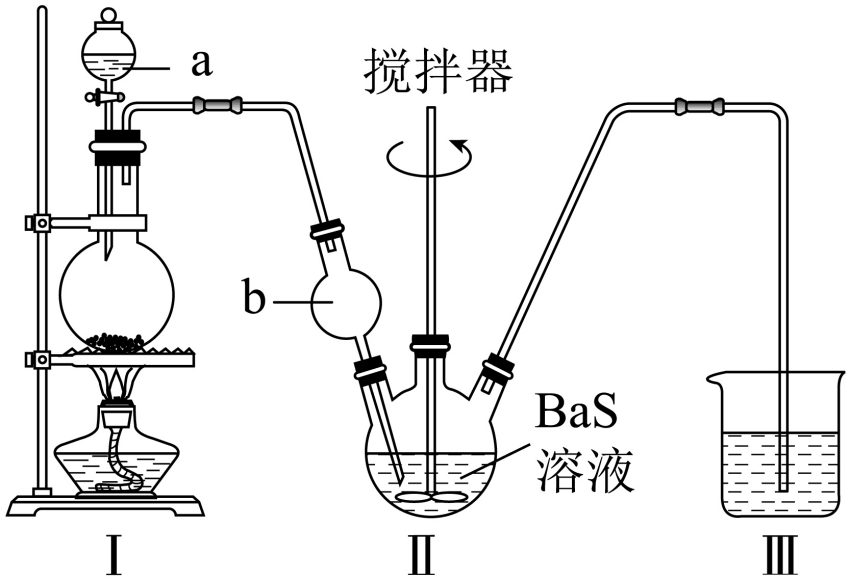
步骤2．产品中BaCl₂·2H₂O的含量测定
①称取产品0.5000 g，用100 mL水溶解，酸化，加热至近沸；
②在不断搅拌下，向①所得溶液逐滴加入热的0.100 mol·L⁻¹的H₂SO₄溶液；
③沉淀完全后，60 ℃水浴40分钟，经过滤、洗涤、烘干等步骤，称量白色固体，质量为0.4660 g。
回答下列问题：
（1）Ⅰ是制取________气体的装置，在试剂a过量并微热时，发生主要反应的化学方程式为________；
（2）Ⅱ中b仪器的作用是________；Ⅲ中的试剂应选用________；
（3）在沉淀过程中，某同学在加入一定量热的H₂SO₄溶液后，认为沉淀已经完全，判断沉淀已完全的方法是________；
（4）沉淀过程中需加入过量的H₂SO₄溶液，原因是________；
（5）在过滤操作中，下列仪器不需要用到的是________（填名称）；
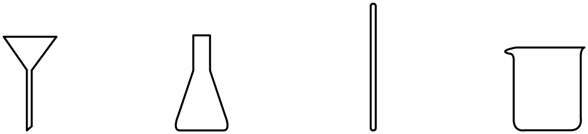
（6）产品中BaCl₂·2H₂O的质量分数为________（保留三位有效数字）。
查看原题图／原始配图
原始配图 1原始配图 2
所用高中知识
HCl气体发生、H₂S尾气处理、防倒吸、沉淀完全和质量比。
读题与思路
过量浓硫酸微热与NaCl生成NaHSO₄和HCl；通BaS放H₂S，球泡防倒吸，尾气用CuSO₄沉CuS。取上清再加硫酸无新白沉说明Ba²⁺沉尽；适量过量SO₄²⁻促沉完全。过滤图不需锥形瓶。BaSO₄物质的量0.4660/233=0.002000mol，等量BaCl₂·2H₂O质量0.4880g，占0.5000g的97.6%。
分步解析
- （1）Ⅰ制HCl，浓H₂SO₄过量并微热时NaCl+H₂SO₄(浓)→NaHSO₄+HCl↑；不能在这一条件下直接写生成Na₂SO₄。
- （2）Ⅱ中HCl极易溶并与BaS反应，b球泡可缓冲液体、防倒吸。放出的H₂S用Ⅲ中的CuSO₄溶液吸收：Cu²⁺+H₂S→CuS↓+2H⁺。
- （3）静置使沉淀沉降，取上层清液于另一洁净试管，继续滴加H₂SO₄，无新白色沉淀则Ba²⁺已沉淀完全。（4）适当过量SO₄²⁻有同离子效应，使残余Ba²⁺进一步沉下。
- （5）图示过滤需漏斗、玻璃棒、烧杯；锥形瓶不是必需，填锥形瓶。
- （6）n(BaSO₄)=0.4660/233=0.002000 mol；n(BaCl₂·2H₂O)同值。其摩尔质量137+71+36=244 g·mol⁻¹，m=0.4880 g；质量分数0.4880/0.5000=97.6%。
答案
（1）HCl；NaCl+H₂SO₄→NaHSO₄+HCl↑。（2）防倒吸；CuSO₄溶液。（3）静置，取上层清液于试管中，继续滴加稀H₂SO₄，若无白色沉淀生成，则沉淀已完全。（4）使Ba²⁺沉淀完全。（5）锥形瓶。（6）97.6%。
检查与易错点
将待测产品摩尔质量用成208（无水BaCl₂）会系统性低估含量。重金属钡盐和H₂S涉及毒性，本题仅作实验分析。
本题来源：paper2022 · doc-paper
返回原卷说明与相对原子质量 返回非选择题说明
题目与已知条件
（13分）2021年我国制氢量位居世界第一，煤的气化是一种重要的制氢途径。回答下列问题：
（1）在一定温度下，向体积固定的密闭容器中加入足量的C(s)和1 mol H₂O(g)，起始压强为0.2 MPa时，发生下列反应生成水煤气：
Ⅰ．C(s)+H₂O(g) ⇌ CO(g)+H₂(g) ΔH₁=+131.4 kJ·mol⁻¹
Ⅱ．CO(g)+H₂O(g) ⇌ CO₂(g)+H₂(g) ΔH₂=−41.1 kJ·mol⁻¹
①下列说法正确的是________；
A．平衡时向容器中充入惰性气体，反应Ⅰ的平衡逆向移动
B．混合气体的密度保持不变时，说明反应体系已达到平衡
C．平衡时H₂的体积分数可能大于2/3
D．将炭块粉碎，可加快反应速率
②反应平衡时，H₂O(g)的转化率为50%，CO的物质的量为0.1 mol。此时，整个体系________（填“吸收”或“放出”）热量________ kJ，反应Ⅰ的平衡常数Kₚ=________（以分压表示，分压=总压×物质的量分数）。
（2）一种脱除和利用水煤气中CO₂方法的示意图如下：
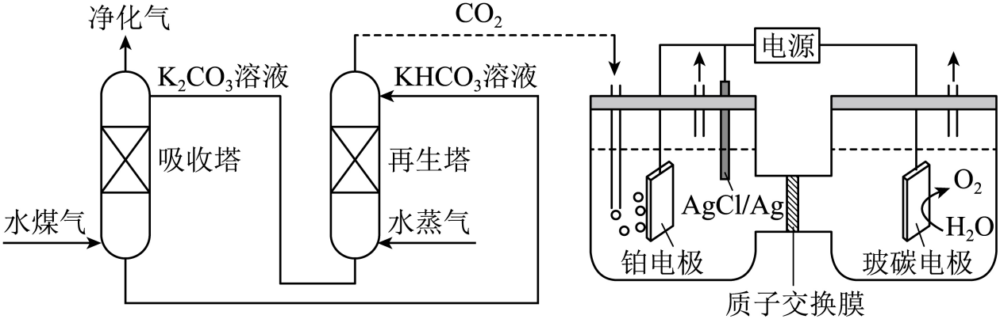
①某温度下，吸收塔中K₂CO₃溶液吸收一定量的CO₂后，c(CO₃²⁻)∶c(HCO₃⁻)=1∶2，则该溶液的pH=________（该温度下H₂CO₃的Kₐ₁=4.6×10⁻⁷，Kₐ₂=5.0×10⁻¹¹）；
②再生塔中产生CO₂的离子方程式为________；
③利用电化学原理，将CO₂电催化还原为C₂H₄，阴极反应式为________。
查看原题图／原始配图
原始配图 1
所用高中知识
联立反应进度、热量相加、分压平衡、缓冲组成、电极式。
读题与思路
恒容加惰气不改反应分压；密度稳定反映C进入气相的净量稳定，粉碎加快接触，选BD。两反应进度x+y=0.50（水耗），x−y=0.10（CO余），得0.30/0.20mol，吸热0.30×131.4−0.20×41.1=31.2kJ。分压H₂O/CO/CO₂/H₂=.10/.020/.040/.10MPa，KpⅠ=.020MPa。Ka₂与1:2组成比给H⁺=10⁻¹⁰，pH10；再生2HCO₃⁻→CO₃²⁻+CO₂+H₂O；CO₂还原乙烯每2C得12e。
分步解析
- （1）①恒温恒容加入惰性气体不改各组分分压，Ⅰ不逆移，A错误。固体C参与后气相质量随反应改变，气体密度长期恒定可作本题平衡标志，B正确；反应Ⅰ给H₂与CO 1∶1，Ⅱ每消耗1CO和1H₂O再产1H₂，水有限，H₂体积分数不会超过2/3，C错误；粉碎炭块增大接触面积，D正确。
- ②设Ⅰ进度x、Ⅱ进度y，有水耗x+y=0.50、CO余x−y=0.10，解x=0.30、y=0.20 mol。热量=0.30×131.4−0.20×41.1=31.2 kJ，净吸热。
- 平衡H₂O、CO、CO₂、H₂物质的量依次0.50、0.10、0.20、0.50 mol。初始1 mol水对应0.20 MPa，同温同容分压分别0.10、0.020、0.040、0.10 MPa，KpⅠ=p(CO)p(H₂)/p(H₂O)=0.020 MPa。
- （2）①Ka₂=c(H⁺)c(CO₃²⁻)/c(HCO₃⁻)，组成比1∶2给c(H⁺)=2Ka₂=1.0×10⁻¹⁰ mol·L⁻¹，pH=10。②加热再生：2HCO₃⁻→CO₃²⁻+CO₂↑+H₂O。
- ③两CO₂中的C从+4降为乙烯中的平均−2，共得12e⁻，酸性表达为2CO₂+12H⁺+12e⁻→C₂H₄+4H₂O。AgCl/Ag为图示参比电极，所问CO₂还原应写在工作阴极。
答案
（1）BD；吸收31.2 kJ；Kp=0.020 MPa。（2）10；2HCO₃⁻→CO₃²⁻+CO₂+H₂O；2CO₂+12H⁺+12e⁻→C₂H₄+4H₂O。
检查与易错点
Kp按题列Ⅰ计，固体C不入式。阴极式左右C2、O4、H12、电荷0一致。若补写AgCl+e⁻→Ag+Cl⁻，它不是本问CO₂转乙烯的替代答案。
本题来源：paper2022 · doc-paper
返回原卷说明与相对原子质量 返回非选择题说明
题目与已知条件
（14分）钛（Ti）及其合金是理想的高强度、低密度结构材料。以钛渣（主要成分为TiO₂，含少量V、Si和Al的氧化物杂质）为原料，制备金属钛的工艺流程如下：
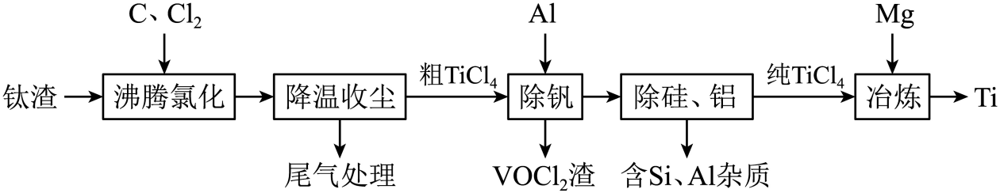
已知“降温收尘”后，粗TiCl₄中含有的几种物质的沸点：
| 物质 | TiCl₄ | VOCl₃ | SiCl₄ | AlCl₃ |
|---|
| 沸点/℃ | 136 | 127 | 57 | 180 |
|---|
回答下列问题：
（1）已知ΔG=ΔH−TΔS，ΔG的值只决定于反应体系的始态和终态，忽略ΔH、ΔS随温度的变化。若ΔG<0，则该反应可以自发进行。根据下图判断：600 ℃时，下列反应不能自发进行的是________。
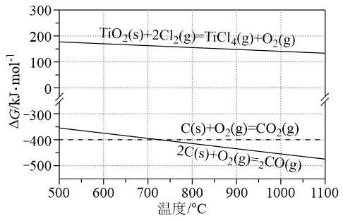
A. C(s)+O₂(g)=CO₂(g)
B. 2C(s)+O₂(g)=2CO(g)
C. TiO₂(s)+2Cl₂(g)=TiCl₄(g)+O₂(g)
D. TiO₂(s)+C(s)+2Cl₂(g)=TiCl₄(g)+CO₂(g)
（2）TiO₂与C、Cl₂在600 ℃的沸腾炉中充分反应后，混合气体中各组分的分压如下表：
| 物质 | TiCl₄ | CO | CO₂ | Cl₂ |
|---|
| 分压/MPa | 4.59×10⁻² | 1.84×10⁻² | 3.70×10⁻² | 5.98×10⁻⁹ |
|---|
①该温度下，TiO₂与C、Cl₂反应的总化学方程式为________；
②随着温度升高，尾气中CO的含量升高，原因是________。
（3）“除钒”过程中的化学方程式为________；“除硅、铝”过程中，分离TiCl₄中含Si、Al杂质的方法是________。
（4）“除钒”和“除硅、铝”的顺序________（填“能”或“不能”）交换，理由是________。
（5）下列金属冶炼方法与本工艺流程中加入Mg冶炼Ti的方法相似的是________。
A. 高炉炼铁 B. 电解熔融氯化钠制钠 C. 铝热反应制锰 D. 氧化汞分解制汞
查看原题图／原始配图
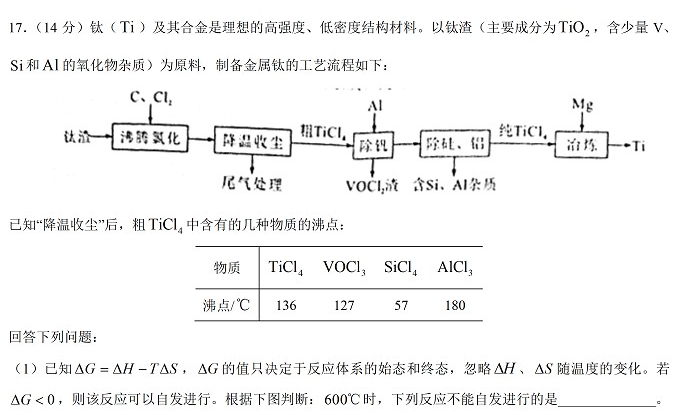
原始配图 1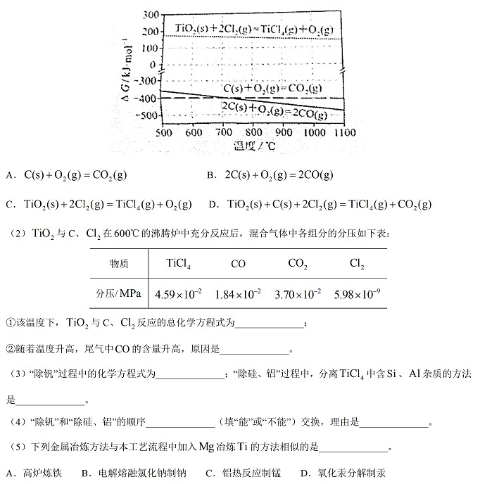
原始配图 2所用高中知识
自由能组合、气体比例配平、碳氧平衡、还原除钒、蒸馏。
读题与思路
600 ℃直接TiO₂氯化ΔG>0，但叠加碳氧化可使总ΔG<0，选C。气体CO:CO₂≈1:2，取2CO和4CO₂，共10O来自5TiO₂，得5TiO₂+6C+10Cl₂→5TiCl₄+2CO+4CO₂。高温利于CO₂+C→2CO。Al失3e还原3V(+5)为+4：3VOCl₃+Al→3VOCl₂+AlCl₃。沸点不同蒸馏除Si/Al，若顺序交换会再引Al。与Mg还原同类的是高炉和铝热，AC。
分步解析
- （1）600 ℃时C氧化成CO、CO₂的ΔG均为负；TiO₂直接被Cl₂氯化的ΔG为正，故不能自发的是C。把它与碳氧化耦合可使总ΔG负。
- （2）①p(CO)∶p(CO₂)=1.84∶3.70≈1∶2。取2CO+4CO₂，需10个O，由5TiO₂提供；C共6个，TiCl₄为5个、需10Cl₂。得5TiO₂+6C+10Cl₂→5TiCl₄+2CO+4CO₂。
- ②升温促进CO₂+C⇌2CO的吸热方向，尾气CO增多。
- （3）VOCl₃中V为+5，VOCl₂中+4，每V得1e⁻；Al失3e⁻，配平3VOCl₃+Al→3VOCl₂+AlCl₃。利用TiCl₄与SiCl₄、AlCl₃沸点差作蒸馏（分馏）去杂。
- （4）顺序不能交换；若先去硅铝，后除钒需另加Al，又带入铝杂质。
- （5）Mg还原TiCl₄是化学还原法；高炉炼铁及铝热还原制锰同属还原剂还原金属化合物，选AC；电解熔盐和氧化汞热分解不是同类。
答案
（1）C。（2）5TiO₂+6C+10Cl₂→5TiCl₄+2CO+4CO₂；升温促进碳还原CO₂。（3）3VOCl₃+Al→3VOCl₂+AlCl₃；蒸馏。（4）不能，会重新引入Al。（5）AC。
检查与易错点
主反应Ti、O、C、Cl分别为5、10、6、20守恒；V反应每3个V得3e⁻等于Al失3e⁻。
本题来源：paper2022 · doc-paper
(二)选考题：共15分。请考生从给出的两道题中任选一题作答。如果多做，则按所做的第一题计分。
相关题目：第 18 题 · 第 19 题
返回原卷说明与相对原子质量 返回非选择题说明 返回选考题说明
题目与已知条件
（15分）铁和硒（Se）都是人体所必需的微量元素，且在医药、化学、材料等领域有着广泛应用。回答下列问题：
（1）乙烷硒啉（Ethaselen）是一种抗癌新药，其结构式如下：
①基态Se原子的核外电子排布式为[Ar]________；
②该新药分子中有________种不同化学环境的C原子；
③比较键角大小：气态SeO₃分子________SeO₃²⁻离子（填“>”“<”或“=”），原因是________。
（2）富马酸亚铁（FeC₄H₂O₄）是一种补铁剂。富马酸分子的结构模型如图所示：
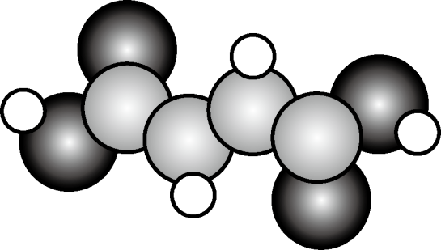
①富马酸分子中σ键与π键的数目比为________；
②富马酸亚铁中各元素的电负性由大到小的顺序为________。
（3）科学家近期合成了一种固氮酶模型配合物，该物质可以在温和条件下直接活化H₂，将N³⁻转化为NH₂⁻，反应过程如图所示：
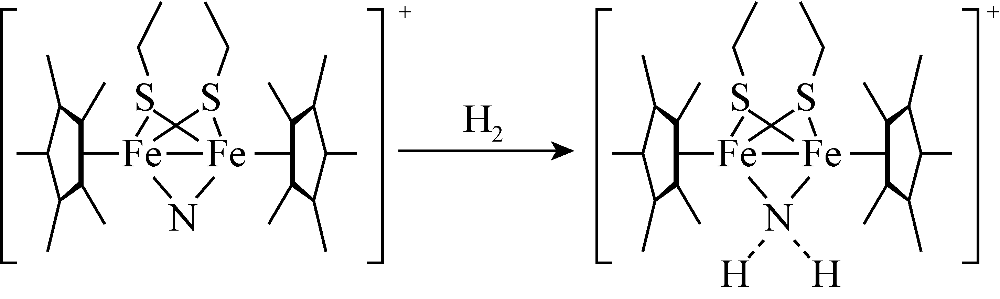
①产物中N原子的杂化轨道类型为________；
②与NH₂⁻互为等电子体的一种分子为________（填化学式）。
（4）钾、铁、硒可以形成一种超导材料，其晶胞在xz、yz和xy平面投影分别如图所示：
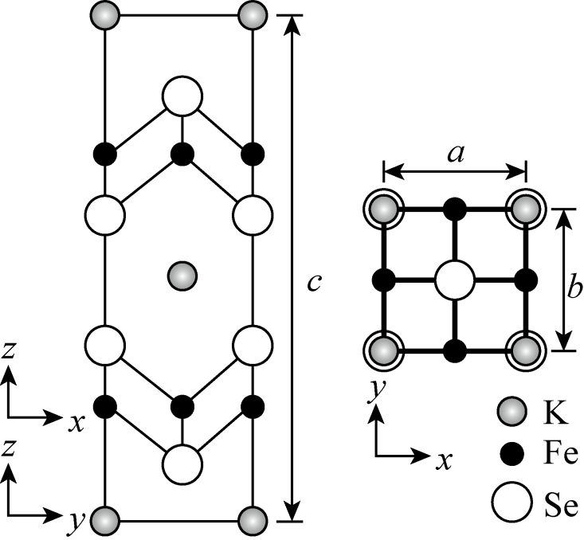
①该超导材料的最简化学式为________；
②Fe原子的配位数为________；
③该晶胞参数a=b=0.4 nm，c=1.4 nm。阿伏加德罗常数的值为NA，则该晶体的密度为________ g·cm⁻³（列出计算式）。
查看原题图／原始配图
原始配图 1原始配图 2原始配图 3原始配图 4
所用高中知识
电子排布、化学环境、价层电子对、σ/π键和晶胞质量。
读题与思路
Se为[Ar]3d¹⁰4s²4p⁴；乙烷桥两端对称，但单侧苯环的Se端和羰基端不同，六个芳碳均不等价，加羰基与桥CH₂共8环境。SeO₃平面三角键角大于带孤对的SeO₃²⁻。富马酸11σ/3π，电负性O>C>H>Fe。产物NH₂⁻中心按四电子域sp³，与H₂O等电子。投影均摊K₂Fe₄Se₄，最简KFe₂Se₂、Fe配位4；ρ=618×10²¹/(0.224NA)。
分步解析
- （1）①Se为34号，[Ar]3d¹⁰4s²4p⁴。②分子两侧互相对称，但每个苯环邻位连接不同的N—C(=O)端与Se端，6个芳碳互不等价；另有1种羰基碳、1种桥CH₂碳，共8种。
- ③SeO₃无孤电子对、平面三角形，O—Se—O约120°；SeO₃²⁻有一对孤电子、三角锥形，孤电子对挤压键角，因此前者大。
- （2）富马酸HOOC—CH=CH—COOH含3条C—C σ、2条C=O σ、2条C—O σ及4条X—H σ，共11σ；2个C=O和1个C=C给3π，故11∶3。电负性O>C>H>Fe。
- （3）产物N周围为四面体式电子域，sp³杂化；NH₂⁻与H₂O均有3个原子、10个电子，H₂O为其等电子体。
- （4）按投影和均摊得每胞K₂Fe₄Se₄，最简式KFe₂Se₂，Fe周围最近4个Se，配位数4。每胞质量[2×39+4×56+4×79]/Nₐ=618/Nₐ g；体积0.4×0.4×1.4=0.224 nm³=0.224×10⁻²¹ cm³。密度618×10²¹/(0.224Nₐ) g·cm⁻³。
答案
（1）3d¹⁰4s²4p⁴；8；大于。（2）11∶3；O>C>H>Fe。（3）sp³；H₂O。（4）KFe₂Se₂；4；618×10²¹/(0.224Nₐ) g·cm⁻³。
检查与易错点
转载参考把碳环境写6，遗漏了不对称邻位连接造成的芳碳区分。本书8为独立对称性分析；晶胞投影重叠不能直接当作一个原子。
本题来源：paper2022 · pdf2022 · doc-paper
返回原卷说明与相对原子质量 返回非选择题说明 返回选考题说明
题目与已知条件
[选修5：有机化学基础]（15分）
物质J是一种具有生物活性的化合物。该化合物的合成路线如下：
已知：①RCHO＋[Ph3P+CH2R']Br－RCH=CHR′；
②![2022年化学第19题题设图（源文件独立图形2）]()
![2022年化学第19题题设图（源文件独立图形3）]()
回答下列问题：
（1）A中官能团的名称为_______、_______；
（2）F→G、G→H的反应类型分别是_______、_______；
（3）B的结构简式为_______；
（4）C→D反应方程式为_______；
（5）CH₂=CH−CO−CH₃是一种重要的化工原料，其同分异构体中能够发生银镜反应的有_______种(考虑立体异构)，其中核磁共振氢谱有3组峰，且峰面积之比为4∶1∶1的结构简式为_______；
（6）I中的手性碳原子个数为_______(连四个不同的原子或原子团的碳原子称为手性碳原子)；
（7）参照上述合成路线，以![2022年化学第19题题设图（源文件独立图形4）]() 和CH₂=CH−CO−CH₃为原料，设计合成
和CH₂=CH−CO−CH₃为原料，设计合成
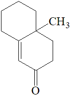
的路线_______(无机试剂任选)。查看原题图／原始配图
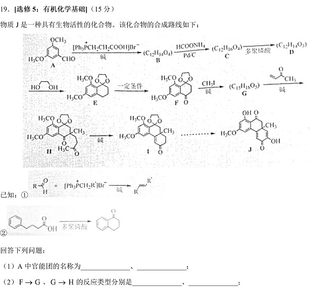
原始配图 1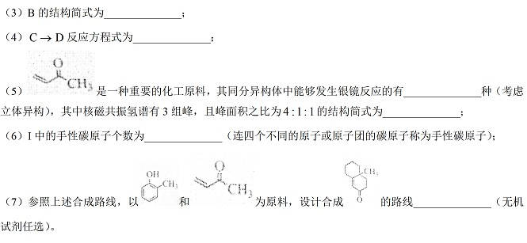
原始配图 2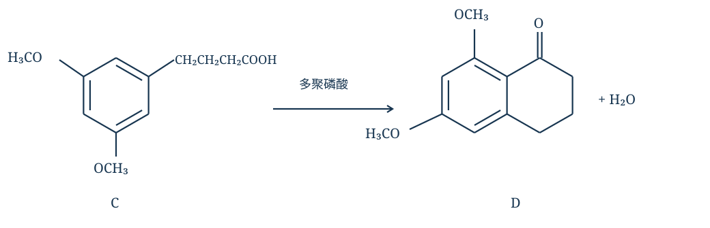
修订前解析配图 3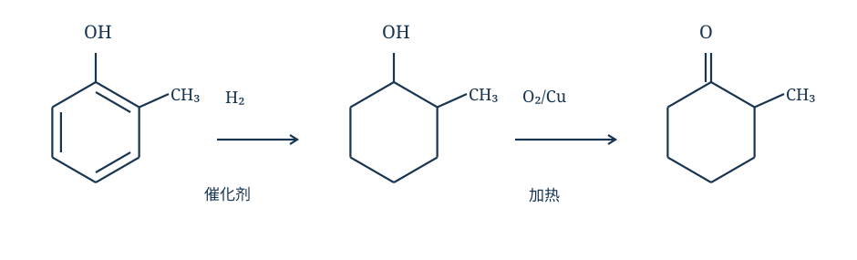
修订前解析配图 4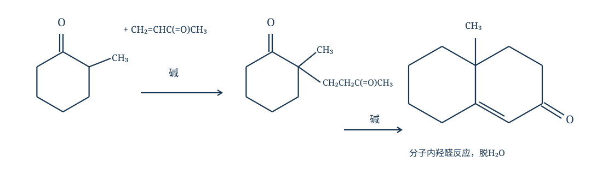
修订前解析配图 5所用高中知识
烯化增碳、还原、分子内酰基化、羰基邻位加成、构造及立体异构。
读题与思路
A醚键/醛基；Wittig型信息令B=ArCH=CHCH₂COOH，计C₁₂H₁₄O₄。还原C后分子内酰基化脱H₂O成D；F甲基化为取代，G对甲基乙烯基酮加成为加成。C₄H₆O银镜异构含3-丁烯醛、2-丁烯醛E/Z、甲基丙烯醛、环丙烷甲醛共5。题设4:1:1用高中简化对应环丙烷甲醛；严格分立体异位氢会产生两个CH₂氢环境，应标模型边界。I只有带甲基稠环碳1手性。末问邻甲酚氢化/氧化为2-甲基环己酮，再Michael加成及环内缩合脱水。
分步解析
- （1）A含醚键和醛基。（2）F→G用CH₃I在羰基α位引入甲基，是取代；G→H加到甲基乙烯基酮CH₂=CHCOCH₃的双键上，是加成。
- （3）题给烯化试剂引入—CHCH₂COOH，故B=3,5-(CH₃O)₂C₆H₃—CH=CH—CH₂—COOH，分子式C₁₂H₁₄O₄。不是只接三碳链。
- （4）C为Ar—CH₂CH₂CH₂COOH，题给多聚磷酸促分子内酰基化，形成六元稠合环酮D并脱H₂O：C₁₂H₁₆O₄→C₁₂H₁₄O₃+H₂O。明确结构见图。
- （5）原物为C₄H₆O，含CHO的异构体有丁-3-烯醛、丁-2-烯醛的E/Z两种、2-甲基丙-2-烯醛、环丙烷甲醛，计5种。按题采用的高中等效氢简化，不细分环上立体环境，4∶1∶1对应环丙烷甲醛：两个CH₂共4H、环上CH 1H、CHO 1H。
- （6）I中只有带甲基的饱和环稠合碳连接4种不同基团，为1个手性碳；平面sp²碳和连两个等同O路径的缩醛碳不计。
- （7）邻甲酚先催化氢化苯环得2-甲基环己醇，再Cu/O₂加热氧化为2-甲基环己酮；碱性条件下与CH₂=CHCOCH₃加成，在带CH₃的α碳引入—CH₂CH₂COCH₃；再分子内羟醛缩合、脱H₂O，得题示稠环烯酮。全路线见图。
答案
（1）醚键、醛基。（2）取代、加成。（3）ArCH=CHCH₂COOH（Ar=3,5-二甲氧基苯基）。（4）3,5-(CH₃O)₂C₆H₃—CH₂CH₂CH₂COOH →(多聚磷酸) D（苯环与羧基碳成环的二甲氧基四氢萘-1-酮）+H₂O。（5）5；环丙烷甲醛（题设高中氢环境模型）。（6）1。（7）邻甲酚 →(H₂/催化剂) 2-甲基环己醇 →(O₂/Cu，△) 2-甲基环己酮 →(CH₂=CHCOCH₃，碱) 加成产物 →(碱，△，分子内羟醛缩合并脱水) 目标稠环烯酮。
检查与易错点
第(5)计数明确包含丁-2-烯醛的E/Z；题给4∶1∶1按高中简化等效氢模型解释，不把这一简化冒作所有实验分辨条件下的严格NMR结论。加成试剂必须明确是CH₂=CHC(=O)CH₃。
严格分辨环丙烷甲醛的氢环境时，相对于—CHO处于环同侧、异侧的CH₂氢通常分成两组各2H，因而可出现2∶2∶1∶1的四类环境。题给4∶1∶1把这两组按高中简化等效氢模型合并，不能据此保证实际谱图必为三组峰。
本题来源：paper2022 · doc-paper
题源与核验说明
- 2022.html旧版解析文件；SHA-256：899fc21f53e6bce1892d49f14b022cac9cc876c2d26a86d008828e6cdec791ed
- 2022年高考真题——化学（湖南卷） Word版含解析【KS5U 高考】.doc原卷文件；SHA-256：9213e196bcb61c6897c2737003b5e3a69f2a64d2f8f09dd1ea33a01739348614
- 中国教育在线：2022湖南高考化学真题同卷题面或参考资料的公开来源；参考答案仅作对照，解析按题设给出推导。
- 中国教育在线所附湖南2022化学原卷及参考答案PDF同卷题面或参考资料的公开来源；参考答案仅作对照，解析按题设给出推导。
- 21世纪教育网：化学平衡常数讲义（含2022湖南第14题原文）化学平衡常数复习资料，其中有关题目仅用于比较参考解释，不作为原卷来源。